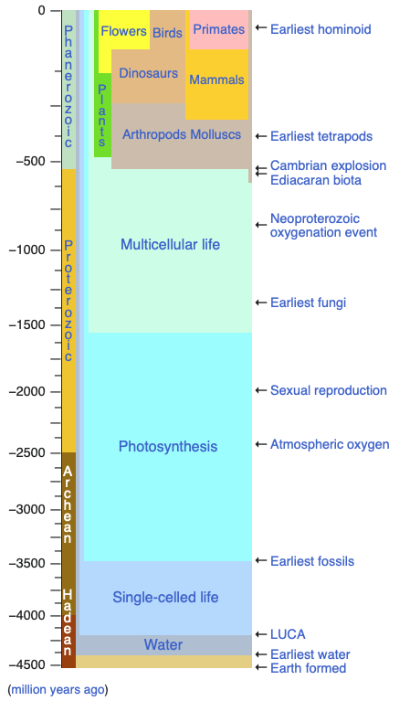
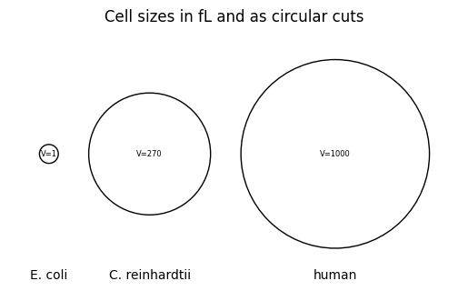
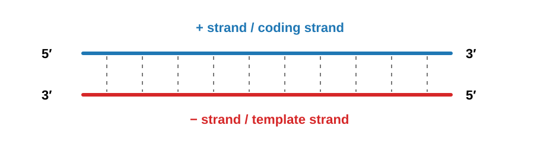
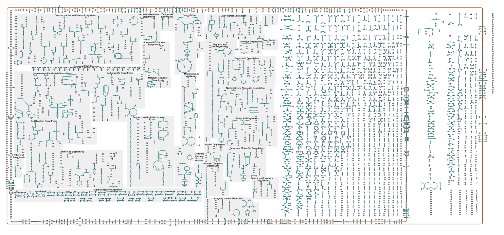

We start with an introduction into the basics of living cells.
Coding setup
We will stick to Python 3 code that can be run stand-alone at your computer whenever possible. When running the code locally on your computer, we suggest to use a virtual environment. We will install several libraries and a virtual environment helps to not interfere with the system’s Python libraries.
For venv this is done by running this in the directory that will be used for the lecture:
python-m venv venv. ./venv/bin/activate
Next let’s load some libraries we will need for the course.
Code
# in case you need to install a library run a command like:# %pip install numpy# %pip install matplotlib# %pip install mobspy# importsimport numpy as npimport matplotlib.pyplot as plt# configure notebook figures# remove it in case you run it as stand-alone code%matplotlib inline
Computing cell
A cell is a computing device: it senses molecular inputs, processes them through a network of biochemical reactions, and produces outputs that determine its behavior: growth, motion, gene expression, division. This computation has been running, and refined by natural selection, for roughly four billion years.

Timeline of life on Earth (from Wikipedia, https://en.wikipedia.org/wiki/Template:Life_timeline)
Cells span a wide range of scales: a bacterium such as E. coli occupies about \(1\,\mu\text{m}^3 = 1\,\text{fL}\) (bionumbers), a microalga such as Chlamydomonas reinhardtii roughly \(270\,\mu\text{m}^3\) (bionumber), and a typical human cell roughly \(500\)–\(4{,}000\,\mu\text{m}^3\) (bionumbers). Within each, thousands of molecular species interact through reactions that sense, integrate, and relay signals.
The figure below compares these volumes under the simplifying assumption of cells being balls.
Code
volumes = [1, 270, 1000]names = ["E. coli", "C. reinhardtii", "human"]radii = [(3*v/(4*np.pi))**(1/3) for v in volumes]gap =2x = [0]for i inrange(1, len(radii)): x.append(x[-1] + radii[i-1] + radii[i] + gap)fig, ax = plt.subplots()for xi, r, v, name inzip(x, radii, volumes, names): ax.add_patch(plt.Circle((xi, 0), r, fill=False)) ax.text(xi, 0, f"V={v}", ha="center", va="center", fontsize=6) ax.text(xi, -8, name, ha="center", va="center", fontsize=10)plt.title("Cell sizes in fL and as circular cuts")ax.set_aspect("equal")ax.set_xlim(x[0] - radii[0] - gap, x[-1] + radii[-1] + gap)ax.set_ylim(-max(radii) - gap, max(radii) + gap)ax.axis("off")plt.show()

Cells have different means to acquire inputs, perform computations, and generate outputs. These include biochemical mechanisms to:
sense their environment, including nutrient gradients, toxins, and signaling molecules
process the stimuli through cascading networks of proteins, signaling molecules, metabolites, and nucleic acids
act by altering growth rate, secreting molecules, or moving toward or away from a signal
The computational substrate is chemistry rather than silicon, and the relevant timescales are set by molecular collision rates. Yet the problems solved, from reliable signal detection under molecular noise to robust decision-making with imprecise components and distributed coordination across cell populations, remain ones that challenge our best engineered systems.
Understanding how cells compute, and learning to engineer that computation, is what this course is about.
Models
To describe (aspects of) a cell’s behavior models on different levels of abstraction have been used. During the course we will discuss some of these. An example is Chemical Reaction Networks (CRNs) that describe the evolution of species in a cell via reactions that occur among the species. Reactions modify, generate, and consume other species. While such a (chemically inspired) model may seem mostly relevant at a molecular level, we will see that one can also use it at more abstract levels. A core difference there is that we often drop the assumption that mass is preserved in the reactions. More on this later in the course.
A model organism: the bacterium Escherichia coli (E. coli)
While many of the concepts covered in the course are general to a wide class of cells, we will often refer to E. coli as an example. E. coli is a gram negative bacterium. It has an inner and outer membrane.
E.coli (from CDC, by Janice Haney Carr, https://phil.cdc.gov)
Bacteria belong to the prokaryotes, which is Greek for “before kernel”; they do not possess of a nucleus such as mammalian cells of humans.
The shape of an is E. coli approximately cylindrical with round caps (rod shaped) with a radius of \(0.5\mu\) and length of \(2\mu m\). Their volume of about \(1 \mu m^3\), or equivalently, \(10^{-15} L = 1fL\). E. coli cultures grow by cell division with a rate depending on several factors like strain, temperature, and available nutrients in the growth medium. During fast growth cells duplicate about every 20 min.
Below is a schematic of its membranes from the inside of the cell (cytoplasm, bottom in the figure) to the outside (top in the figure).
E.coli (from wikimedia by Jeff Dahl, CC BY-SA 4.0, https://en.wikipedia.org/wiki/Gram-negative_bacteria)
Recently microscopy has made significant advances in capturing high-resolution images of parts of cells. One such image you can find in Matias, Valério RF, et al., J. of Bacteriology, 2020 Fig.4. of the paper where membranes are nicely visible.
Genome
The genome of E. coli is a double stranded circular DNA and varies considerably by strain. For MG1655 (a K-12 substrain) it is 4,641,652 bp long and can be found in the ncbh database. It comprises of 4,000 to 5,000 genes. The following figure shows the annotated genomes with currently known genes in 2026.
Gene. A gene is a sequence of DNA that is transcribed. Not necessarily all genes are translated (result in proteins though) and postprocessing may happen on several layers. Genes often occur in clusters with common control elements. These sequences including genes and control elements are called operons. They are particularly important from a computational perspective and we will discuss them in detail throughout the course.
A fascinating, already cleared up but still crowded, interactive visualization can be found at cellsignal.com
crowded cell (from media.cellsignal.com)
The central dogma
Central dogma. The flow of genetic information in a cell was summarized by Francis Crick in 1958. DNA stores the heritable sequence information. The universal flows are:
Replication: DNA \(\to\) DNA (genome copied before division)
Transcription: DNA \(\to\) RNA (a gene is transcribed into messenger RNA)
Translation: RNA \(\to\) protein (mRNA translated into amino acid sequence)
Two additional flows occur in specific organisms but are not happening in all cells:
Reverse transcription: RNA \(\to\) DNA (retroviruses such as HIV)
RNA replication: RNA \(\to\) RNA (RNA viruses)
Central dogma of molecular biology (from Wikipedia, by Daniel Horspool, CC BY-SA 3.0)
Sequence information does not flow from protein back to nucleic acid under any known natural conditions.
DNA
A nucleotide is the monomer, the basic building brick, of DNA: a phosphate group, a 2′-deoxyribose sugar, and one of four nitrogenous bases: adenine (A), thymine (T), guanine (G), cytosine (C). A and G are purines (two-ring); T and C are pyrimidines (one-ring).
DNA composition (from Wikipedia, by the National Human Genome Research Institute)
DNA is a double helix of two antiparallel polynucleotide strands (Watson and Crick, 1953). The strands are held together by Watson-Crick base pairing: A pairs with T via two hydrogen bonds, G pairs with C via three and thus binds stronger. The higher the G-C content in a DNA segment, the more thermally stable the duplex.
DNA double helix with labeled structural features (from Wikipedia, by Zephyris, CC BY-SA 3.0)
Here we see the bonds in greater detail.
Direction. Each strand has chemical polarity: the 5′ end carries a free phosphate on the 5′ carbon of the sugar; the 3′ end carries a free hydroxyl on the 3′ carbon. The two strands of a duplex are antiparallel: one runs 5′ \(\to\) 3′ while its complement runs 3′ \(\to\) 5′.
Plus and minus strands. By convention the (+) strand, also called the sense or coding strand, has the same sequence as the mRNA (with T in place of U). The (−) strand, the antisense or template strand, is its complement and serves as the template for the RNA polymerase (RNAP) during transcription. Which strand is (+) depends on the gene: on a circular bacterial chromosome, different genes use different strands as their template.

DNA plus and minus strands
DNA Synthesis
DNA strands can only be synthesized in the direction 5’ \(\to\) 3’. This is done when the genome is copied. The strand that is read is read in the direction 3’ \(\to\) 5’ to create a 5’ \(\to\) 3’ copy. Synthesis is performed by the DNA-bound DNA polymerase, or short, DNA polymerase.
DNA replication starts from the oriC site in both directions along the circular genome in E. coli. The DNA helicase creates a so-called moving replication fork so that the DNA polymerase can access the strands for replication.
DNA replication fork (from Wikipedia, by Masur, CC BY-SA 3.0)
As we see here the lagging strand cannot be synthesized continuously since synthesis can be only 5’ \(\to\) 3’. The short initial starts are from RNA that is synthesized via the Primase enzyme.
Side note: Speed. E. coli can synthesize DNA at 1000 \(\text{nt}\,\text{s}^{-1}\). This is much faster than human cells that have a speed of 50 \(\text{nt}\,\text{s}^{-1}\). How long does it take to replicate the whole E. coli genome? At a size of 4.6 Mbp and the fact that the genome is replicated form both sides, we obtain a duration of \[ \frac{4.6\, \text{Mbp} \cdot \frac{1}{2}}{1000\, \text{bp}\,\text{s}^{-1}} \approx 40 \, \text{min} .\]
Several such replications must thus be ongoing during growth of an E. coli that divides every 20 min. The gens close to the oriC thus exist in multiples.
RNA
RNA nucleotides differ from DNA in two respects: the sugar is ribose (with a 2′-OH group) rather than deoxyribose, and uracil (U) replaces thymine (T). U base-pairs with A, just as T does.
Direction. RNA is synthesized and read 5′ to 3′, the same convention as DNA. During transcription, RNAP moves along the template strand 3′ \(\to\) 5′ and builds the transcript 5′ \(\to\) 3′.
Side note: Speed. E. coli can transcribe at about 40-80 \(\text{nt}\,\text{s}^{-1}\). This is again faster than human cells that have a speed of 6-70 \(\text{nt}\,\text{s}^{-1}\).
RNA is typically single-stranded, but extensive intramolecular base pairing creates secondary structures (stems, loops, pseudoknots) that are critical for function. The main functional classes in bacteria are:
Class
Function
mRNA
carries coding sequence from gene to ribosome
tRNA
adaptor molecule linking codon to amino acid
rRNA
structural and catalytic core of the ribosome
sRNA
small regulatory RNA, often by base-pairing with mRNA
In eukaryotes, pre-mRNA undergoes further processing (5′ capping, splicing of introns, 3′ polyadenylation) before export from the nucleus. Bacteria lack these steps: the primary transcript often is the mature mRNA.
Transcription
The enzyme responsible for transcription is RNA polymerase (RNAP or simply R). In bacteria, the catalytic core (subunit composition α₂ββ′ω) cannot on its own locate where on the chromosome to begin. The σ (sigma) factor is a dissociable subunit that associates with the core to form the holoenzyme (α₂ββ′ωσ also written as Rσ). The sigma factor recognizes the promoter: a pair of conserved sequence motifs at positions −35 and −10 relative to the transcription start site. After binding, and being in the so-called closed complex, the holoenzyme unwinds roughly DNA locally by favorable energetic binding conditions to form the open complex, allowing the template strand to enter the active site of the holoenzyme.
Transcription then proceeds in three stages:
Initiation: holoenzyme binds promoter, transitioning from the closed complex to the open complex. It starts transcribing the DNA, but may easily fall off and interrupt during the first few codons. Sigma dissociates once elongation is underway.
Elongation: RNAP moves along the template strand (3′ $$ 5′), synthesizing mRNA 5′ \(\to\) 3′ at roughly \(40-80\;\text{nt}\,\text{s}^{-1}\) in E. coli.
Termination: RNAP stalls at a terminator sequence and releases the mRNA transcript.
E. coli encodes seven sigma factors. The housekeeping factor \(\sigma^{70}\) directs transcription of most genes during exponential growth. Alternative sigma factors (e.g., \(\sigma^{32}\)) redirect RNAP to stress-response genes, giving the cell a simple mechanism for large-scale transcriptional reprogramming. This is a recurring design motif we will encounter throughout the course.
From DNA to mRNA: transcription overview (from www.sciencefacts.net).
Translation
The mRNA is decoded by the ribosome, a large ribonucleoprotein assembly. In bacteria it consists of a 30S small subunit and a 50S large subunit (together: 70S). The small subunit positions itself on the mRNA via the Shine-Dalgarno sequence, a purine-rich stretch about 5-10 nt upstream of the start codon (AUG) that base-pairs with the 3′ end of 16S rRNA.
During elongation, aminoacyl-tRNAs enter the A-site, each matching the codon by anticodon base-pairing. The large subunit catalyzes peptide bond formation, the ribosome translocates by one codon, and the growing polypeptide is extended at roughly 15-20 amino acids \(\text{s}^{-1}\). Translation ends at a stop codon (UAA, UAG, or UGA), triggering release of the polypeptide.
Translation at the ribosome (from Wikipedia, by Richard Wheeler, CC BY-SA 3.0)
In bacteria, transcription and translation are spatially coupled: ribosomes begin translating the 5′ end of an mRNA while RNAP is still synthesizing the 3′ end. This co-transcriptional translation is absent in eukaryotes, where transcription occurs in the nucleus and mRNA must be exported before cytoplasmic translation can begin.
Pathways in E. coli
Reactions are typically grouped together into pathways, that describe reactions for a certain cell function. Examples are the modification of molecules by enzymes along metabolic pathways as well as transcription and translation in genetic pathways. An overview of reactions grouped into pathways is shown in the figure below. An interactive schematic is available here by ecocyc and lists of pathways available, e.g., by biocyc and kegg.

schematic of E. coli pathways (from ecocyc, https://ecocyc.org/overviewsWeb/celOv.shtml?orgid=ECOLI)
Below is an excerpt of reactions from a genetic pathway that includes the expression of the lacI gene. See here for an interactive version. These reactions will play a role later on in the course.